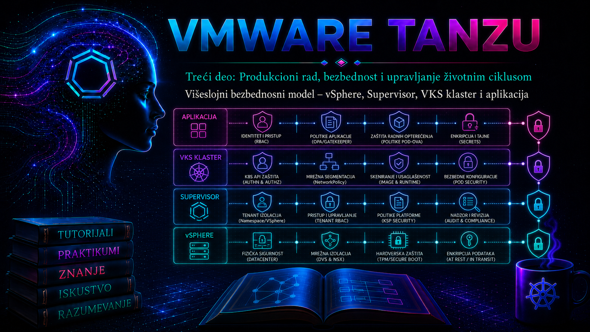

VMware & Tanzu

Bezbednost Tanzu platforme nije osobina jedne komponente niti rezultat jedne „hardening” kontrolne liste. Ona nastaje tek kada se međusobno usklade kontrole infrastrukture, upravljačke ravni, Kubernetes klastera i aplikacije. vSphere štiti fizičke resurse, hipervizore, virtuelne mašine i administratorski pristup; Supervisor povezuje vSphere autorizaciju, namespace granice i Kubernetes API; VKS klaster ima sopstveni identitet, RBAC, mrežne politike i runtime kontrole; aplikacija mora da bude bezbedna u image-u, manifestu, tajnama, komunikaciji i načinu rada procesa. Propust u jednom sloju može da poništi kontrole drugog sloja, dok pravilno projektovana odbrana po dubini sprečava da jedan kompromitovani nalog, Pod ili servis postane kompromitovanje čitave platforme.
Ova lekcija povezuje prethodne teme o identitetu, namespace-ovima, mreži, storage-u, registry-ju i implementaciji aplikacije u jedinstven model pretnji, odgovornosti i dokaza. Cilj nije da administrator zapamti što više opcija, već da za svaku kontrolu ume da odgovori: koju pretnju umanjuje, na kojoj granici se primenjuje, ko je vlasnik, kako se meri njena efikasnost, šta ostaje nezaštićeno i kako se oporavlja sistem kada kontrola zakaže.
1. Odbrana po dubini, Zero Trust i zajednička odgovornost
Defense in depth znači da se zaštita ne oslanja na jednu prepreku. Identitet se proverava na svakom relevantnom API-ju, privilegije se ograničavaju na najmanji potreban opseg, mrežni tokovi se eksplicitno dozvoljavaju, workload radi sa minimalnim Linux mogućnostima, poverenje u image i sertifikate se proverava, a promene ostavljaju audit trag. Zero Trust u ovom kontekstu ne znači proizvod, već operativni princip: lokacija u „internoj” mreži sama po sebi ne daje poverenje; identitet, uređaj, kontekst zahteva i dozvola moraju biti proverljivi.
Kontrole se moraju projektovati oko konkretnih granica poverenja. vCenter administrativna sesija nije isto što i Kubernetes kubeconfig; pravo da korisnik pristupi vSphere Namespace-u nije automatski pravo da upravlja svakim resursom u VKS klasteru; dozvola da kreira Deployment može posredno omogućiti čitanje Secret-a ako korisnik može da pokrene Pod koji taj Secret montira. Zbog toga se efektivne privilegije procenjuju po mogućem ishodu, a ne samo po nazivu RBAC glagola.
| Sloj i granica poverenja | Primarni objekti i kontrole | Tipična posledica propusta | Primarni dokaz |
|---|---|---|---|
| vSphere i fizička infrastruktura | vCenter SSO/Identity Provider, uloge i privilegije, ESXi, management mreža, VM Encryption, KMS, Secure Boot, TPM i lifecycle | Preuzimanje hosta ili VM-a, pristup diskovima i snapshot-ovima, kompromitovanje upravljačke ravni | vCenter Events/Tasks, autentikacioni i servisni logovi, alarmi, hardening izveštaj i konfiguracioni baseline |
| Supervisor | Supervisor control plane, vSphere Namespace, dozvole, kvote, VM i storage klase, API endpoint, sertifikati, NSX/vDS mreža i Supervisor Services | Prelazak granice tenant-a, kreiranje privilegovanog workload-a ili zloupotreba infrastrukturnog API-ja | Supervisor API audit, vCenter događaji, stanje servisa, namespace konfiguracija i WCP logovi |
| VKS klaster | Kubernetes RBAC, ServiceAccount, Pod Security Admission, NetworkPolicy, admission politike, Secret-i, node OS i Kubernetes verzija | Cluster-admin eskalacija, lateralno kretanje, krađa tajni, kompromitovanje node-a | kubectl auth can-i, audit zapisi, Events, CNI i control-plane logovi, inventar image-a |
| Aplikacija i supply chain | Izvorni kod, CI/CD identitet, SBOM, potpis image-a, registry, manifest, securityContext, TLS, autentikacija i autorizacija aplikacije | Izvršavanje ranjivog ili zlonamernog koda, curenje podataka i zloupotreba poslovne funkcije | Potpis i digest image-a, scan/SBOM izveštaj, Git i pipeline trag, aplikacioni i pristupni logovi |
2. Model pretnji i tok napada kroz slojeve
Model pretnji počinje inventarom resursa i identiteta: vCenter i Supervisor API endpoint-i, administratorske radne stanice, registry, CI/CD runner-i, VKS control plane i worker node-ovi, Secret-i, persistent volumeni, backup-i, DNS, NTP, sertifikacioni autoriteti i spoljne integracije. Za svaki resurs se beleže vlasnik, klasifikacija, ulazne tačke, dozvoljeni tokovi, zavisnosti i očekivani audit izvor. Tek zatim se biraju kontrole.
Realan napad često prelazi više slojeva: kompromitovan developerski token menja manifest; preširok RBAC dozvoljava kreiranje Pod-a; Pod montira ServiceAccount token i Secret; nepostojanje egress politike omogućava iznošenje podataka; privilegovani container ili hostPath otvara put ka node-u; ukradeni infrastrukturni kredencijali šire incident na vSphere. Obrnuto, potpisan image bez runtime ograničenja ne sprečava zloupotrebu ranjive aplikacije, a NetworkPolicy bez aplikacionog TLS-a ne potvrđuje identitet druge strane.
3. Prvi sloj – vSphere, ESXi i infrastrukturno poverenje
vSphere je koren infrastrukturnog poverenja. Njegova kompromitacija može zaobići kontrole unutar gostujućeg Kubernetes-a, jer privilegovani vSphere administrator može da menja VM hardver, mreže, diskove, snapshot-ove ili lifecycle. Zato se administrativni pristup odvaja od korisničkog saobraćaja, koristi centralni Identity Provider i MFA gde ga podržava izabrani identitetski tok, ukidaju deljeni nalozi, a privilegovane uloge dodeljuju vremenski ograničeno i kroz kontrolisan proces promene.
- Identitet i privilegije: odvojiti vCenter administratore, platform operatore, mrežne i storage administratore; ne koristiti globalnu
Administratorulogu za dnevni rad; servisnim nalozima dati samo dokumentovane privilegije. - Management plane: ograničiti pristup vCenter-u, ESXi management interfejsima, NSX Manager-u, KMS-u i backup sistemu na administratorske zone i kontrolisane jump host-ove.
- Integritet platforme: pratiti podržane verzije i zakrpe, Secure Boot/TPM i host attestation kada su podržani, Lockdown Mode prema operativnom modelu i stanje vSphere Lifecycle Manager baseline-a ili image-a.
- Zaštita podataka: koristiti enkripciju VM-a i odgovarajući KMS kada klasifikacija to zahteva; zaštititi backup, snapshot i storage administrativne puteve istim ili višim nivoom od izvornog workload-a.
- Dokazi: centralizovati vCenter/ESXi događaje i logove, sinhronizovati NTP i obezbediti da log platforma nije pod istim kompromitovanim administrativnim domenom.
Enkripcija ne zamenjuje autorizaciju. VM Encryption štiti podatke u mirovanju i određene operacije nad VM objektom, ali aplikacija i dalje vidi dekriptovane podatke tokom rada. Takođe, gubitak KMS dostupnosti ili ključa može postati problem dostupnosti i oporavka. Pre produkcije moraju se dokazati redundansa KMS-a, backup konfiguracije, procedura obnavljanja poverenja i oporavak u DR lokaciji.
4. Drugi sloj – Supervisor kao granica između infrastrukture i Kubernetes-a
Supervisor nije samo „još jedan Kubernetes klaster”. On je vSphere IaaS control plane koji povezuje vCenter inventar, resurse, identitet, mrežu i storage sa Kubernetes API modelom. vSphere Namespace predstavlja administrativnu granicu u kojoj se dodeljuju korisnici i grupe, resursne kvote, VM klase, storage politike i mrežna pravila. Loše projektovan namespace može omogućiti timu da potroši zajednički kapacitet ili dobije infrastrukturne mogućnosti koje mu poslovna uloga ne zahteva.
Supervisor API endpoint mora biti dostupan samo iz opravdanih administrativnih i developerskih mreža. Sertifikat se validira lancem poverenja i SAN vrednostima; --insecure-skip-tls-verify nije rešenje za produkciju, jer uklanja proveru identiteta endpoint-a. Broadcom dokumentacija razlikuje vCenter domen poverenja, koji tipično koristi VMCA, i Kubernetes domen poverenja sa Kubernetes CA. Promena vCenter, Supervisor, NSX ili registry sertifikata zahteva plan zavisnosti i post-change proveru, jer narušeno poverenje može zaustaviti reconciliation iako su pojedinačne komponente „Running”.
| Supervisor odluka | Bezbednosni cilj | Operativna posledica | Validacija |
|---|---|---|---|
| Namespace po timu ili trust zoni | Smanjuje blast radius i razdvaja odgovornosti | Više objekata i politika za održavanje; zahteva dosledno imenovanje | Efektivne dozvole, kvote, VM/storage klase i mrežni tokovi provereni za svaki namespace |
| Ograničen skup VM klasa | Sprečava nekontrolisano kreiranje velikih ili specijalnih node-ova | Može ograničiti workload koji legitimno traži više resursa | Tim vidi samo odobrene klase; testni VKS manifest prolazi ili kontrolisano pada |
| Dozvoljene storage politike | Vezuje podatke za zahtevanu dostupnost, enkripciju i lokaciju | Pogrešna politika menja performanse, cenu i mogućnost oporavka | PVC/PV mapiranje i vSphere storage policy compliance |
| Ograničen pristup API endpoint-u | Smanjuje površinu napada na control plane | Zahteva pouzdanu administratorsku putanju i DR pristup | Dozvoljena mreža uspostavlja TLS; nedozvoljena ne može da dođe do endpoint-a |
kubectl api-resources i na odgovarajućoj release dokumentaciji.
5. Treći sloj – bezbednost VKS klastera
Svaki VKS klaster je zaseban bezbednosni domen sa sopstvenim Kubernetes API-jem, RBAC pravilima, ServiceAccount identitetima, Secret-ima, mrežnim politikama i lifecycle-om. Administratorski pristup Supervisor-u ne treba pretvarati u trajni cluster-admin pristup svim VKS klasterima. Grupe se mapiraju na unapred definisane uloge, a hitni „break-glass” pristup je kontrolisan, vremenski ograničen i auditovan.
5.1. Autentikacija, RBAC i ServiceAccount
RBAC se projektuje od potrebnih radnji ka pravilima: resurs, API grupa, glagol i namespace. Wildcard vrednosti i cluster-admin se izbegavaju, posebno u automatizaciji. RoleBinding ograničava dodelu na namespace, dok ClusterRoleBinding dodeljuje cluster-wide efekat čak i kada referencira standardnu ClusterRole. Privilegije se proveravaju impersonacijom, bez prijavljivanja kao testirani korisnik.
# Read-only: izvršava VKS administrator sa pravom impersonacije.
kubectl auth can-i create deployments.apps \
--namespace app-prod \
--as-group='platform-developers'
kubectl auth can-i get secrets \
--namespace app-prod \
--as-group='platform-developers'
kubectl auth can-i --list \
--namespace app-prod \
--as-group='platform-developers'ServiceAccount mora biti namenski za workload, bez nepotrebnog automatskog montiranja tokena. Kratkotrajni projektovani tokeni su poželjniji od trajnih tokena. Posebno treba analizirati kombinaciju dozvola: korisnik koji ne može direktno da pročita Secret, ali može da kreira Pod i navede postojeći Secret, u praksi može doći do njegove vrednosti.
apiVersion: v1
kind: ServiceAccount
metadata:
name: orders-api
namespace: app-prod
automountServiceAccountToken: false5.2. Pod Security Admission i runtime ograničenja
Aktuelni upstream Kubernetes koristi Pod Security Standards profile privileged, baseline i restricted, koje ugrađeni Pod Security Admission može primeniti režimima enforce, audit i warn. Nekadašnji PodSecurityPolicy je uklonjen iz upstream Kubernetes-a i ne treba ga uvoditi u nove procedure. Za postojeće aplikacije bezbedan put je najpre audit/warn, popravka manifesta i tek zatim enforce; verzu profila treba eksplicitno pinovati kada organizacija želi kontrolisanu promenu ponašanja pri Kubernetes nadogradnji.
# State-changing: prvo primeniti u laboratorijskom namespace-u.
kubectl label namespace app-lab \
pod-security.kubernetes.io/enforce=restricted \
pod-security.kubernetes.io/enforce-version=latest \
pod-security.kubernetes.io/audit=restricted \
pod-security.kubernetes.io/audit-version=latest \
pod-security.kubernetes.io/warn=restricted \
pod-security.kubernetes.io/warn-version=latest \
--overwrite
Workload zatim eksplicitno definiše ne-root izvršavanje, zabranu eskalacije privilegija, read-only root filesystem gde aplikacija to podržava, seccomp profil, uklanjanje Linux capabilities i resursne granice. Ove vrednosti nisu ukras: readOnlyRootFilesystem zahteva posebne writable volume-e za legitimne privremene podatke, a pogrešan UID ili nedostajuće dozvole mogu sprečiti start aplikacije.
apiVersion: apps/v1
kind: Deployment
metadata:
name: orders-api
namespace: app-lab
spec:
replicas: 2
selector:
matchLabels:
app: orders-api
template:
metadata:
labels:
app: orders-api
spec:
serviceAccountName: orders-api
automountServiceAccountToken: false
securityContext:
runAsNonRoot: true
seccompProfile:
type: RuntimeDefault
containers:
- name: api
image: registry.example.com/training/orders-api@sha256:REPLACE_WITH_APPROVED_DIGEST
ports:
- name: http
containerPort: 8080
securityContext:
allowPrivilegeEscalation: false
readOnlyRootFilesystem: true
capabilities:
drop:
- ALL
resources:
requests:
cpu: 100m
memory: 128Mi
limits:
cpu: 500m
memory: 256Mi
volumeMounts:
- name: tmp
mountPath: /tmp
volumes:
- name: tmp
emptyDir: {}5.3. Mrežna segmentacija
Kubernetes NetworkPolicy je L3/L4 allow-list model koji sprovodi CNI. Samo kreiranje objekta nema efekat ako konkretni CNI i verzija ne podržavaju njegovo sprovođenje. Ako nijedna politika ne selektuje Pod za određeni smer, taj smer je podrazumevano otvoren. Zato se namespace uvodi sa default-deny politikom, a zatim se dodaju minimalni DNS, ingress, backend i spoljašnji tokovi. Promena politike može uticati na postojeće konekcije na način koji zavisi od implementacije, pa se validira novom konekcijom i posmatranjem CNI telemetry-ja.
apiVersion: networking.k8s.io/v1
kind: NetworkPolicy
metadata:
name: default-deny-all
namespace: app-lab
spec:
podSelector: {}
policyTypes:
- Ingress
- Egress
---
apiVersion: networking.k8s.io/v1
kind: NetworkPolicy
metadata:
name: allow-dns
namespace: app-lab
spec:
podSelector: {}
policyTypes:
- Egress
egress:
- to:
- namespaceSelector:
matchLabels:
kubernetes.io/metadata.name: kube-system
ports:
- protocol: UDP
port: 53
- protocol: TCP
port: 53Default-deny nije kompletna segmentacija. Potrebno je dokumentovati DNS, registry, NTP, observability, identity provider, spoljne API-je i inter-service tokove. Standardni NetworkPolicy ne rešava TLS identitet, L7 autorizaciju, FQDN pravila ni globalnu politiku sam po sebi; takve mogućnosti zavise od Antrea/NSX funkcija, service mesh-a, ingress/gateway sloja i konkretne podržane verzije.
5.4. Secret-i, enkripcija i podaci
Base64 u Kubernetes Secret-u je kodiranje, ne enkripcija. Pristup glagolima get, list i watch nad Secret-ima se strogo ograničava; list praktično daje pristup sadržaju svih objekata u opsegu. Secret se ne čuva u Git repozitorijumu, shell istoriji, ticket-u ili logu. Kada platforma i verzija podržavaju eksterni secret store ili Supervisor Secret Store Service, izbor mora uključiti model sinhronizacije, rotaciju, dostupnost providera, ponašanje pri prekidu i audit.
Enkripcija Secret podataka u etcd-u, ako je podržana i dostupna kroz upravljani VKS lifecycle, mora se konfigurisati samo prema zvanično podržanom postupku. Ručno menjanje control-plane fajlova u upravljanom VKS klasteru može biti prepisano reconciliation-om ili učiniti klaster nepodržanim. Persistent volumeni, backup-i i snapshot-ovi zahtevaju zasebnu enkripciju, retention i kontrolu pristupa; zaštita Secret-a ne štiti bazu podataka.
6. Četvrti sloj – aplikacija i software supply chain
Platforma ne može popraviti SQL injection, pogrešnu poslovnu autorizaciju ili tajnu upisanu u log. Aplikacioni tim je odgovoran za bezbedan razvoj, pregled zavisnosti, testiranje, autentikaciju, autorizaciju, validaciju ulaza, upravljanje sesijama, TLS i bezbedno rukovanje podacima. Platform tim obezbeđuje guardrails i dokaze da se odobreni artefakt izvršava u dozvoljenom kontekstu.
- Izvorni kod i pipeline promene prolaze pregled, zaštitu grana i sledljivost autora.
- Build je ponovljiv koliko je praktično, zavisnosti su zaključane, a SBOM i vulnerability scan vezani za isti image digest.
- Image se potpisuje i promoviše između okruženja bez ponovnog tagovanja neproverenog sadržaja; Deployment u produkciji referencira digest, ne promenljiv
latesttag. - Admission kontrola, kada je podržana i odobrena, odbija nepotpisan image, nedozvoljen registry, privilegovan workload ili manifest bez obaveznih metapodataka.
- Runtime detekcija, aplikacioni logovi i mrežna telemetrija korelišu se sa Kubernetes audit i vCenter događajima.
7. Sertifikati, ključevi i granice poverenja
Sertifikat potvrđuje identitet samo ako klijent veruje odgovarajućem CA lancu, proverava SAN za ime ili IP kojim pristupa i ako privatni ključ nije kompromitovan. U Tanzu okruženju postoje najmanje vCenter/VMCA, Supervisor/Kubernetes, VKS i aplikacioni domeni poverenja. Njih ne treba nekritički objediniti jednim široko distribuiranim CA ključem. Inventar sertifikata mora sadržati endpoint, vlasnika, issuer, SAN, datum isteka, automatiku rotacije, zavisne sisteme i proceduru rollback-a.
# Read-only: sa administratorske radne stanice proverava lanac i SAN endpoint-a.
openssl s_client \
-connect supervisor.example.com:6443 \
-servername supervisor.example.com \
-showcerts </dev/null
# Read-only: pregled završnog datuma lokalno sačuvanog sertifikata.
openssl x509 -in supervisor-ca-or-cert.pem -noout -subject -issuer -dates -ext subjectAltNameTLS timeout nije automatski sertifikacioni problem. U NSX okruženjima MTU nesaglasnost može propustiti mali TCP test, a odbaciti veći TLS handshake sa lancem sertifikata. Dijagnostika zato koreliše DNS, rutu, port, MTU, paketni gubitak i tek zatim X.509 validaciju. Posle zamene vCenter sertifikata proverava se poverenje NSX Compute Manager integracije i Supervisor reconciliation; ručno kopiranje ključeva ili restart kontrolnih servisa radi se samo po odgovarajućem Broadcom KB-u i uz podršku kada je propisano.
8. Audit, observability i dokazivost kontrole
Bezbednosna kontrola koja se ne može proveriti ostaje pretpostavka. Audit treba da odgovori ko je, kada, odakle, nad kojim resursom i kojim glagolom izvršio radnju, sa kojim rezultatom. Kubernetes Event nije isto što i audit događaj: Event opisuje stanje resursa i često ima ograničen retention, dok API audit beleži zahtev kroz faze obrade. Audit nivo RequestResponse može uhvatiti poverljiv sadržaj i povećati potrošnju API servera, pa se politika, redakcija i retention projektuju pažljivo.
| Pitanje incidenta | Izvor dokaza | Polja za korelaciju |
|---|---|---|
| Ko je promenio vSphere/namespace konfiguraciju? | vCenter Tasks/Events i relevantni vCenter/WCP logovi | Korisnik, objekat, task ID, vreme, izvorna IP adresa |
| Ko je kreirao ili izmenio Kubernetes objekat? | Supervisor ili VKS kube-apiserver audit | user.username, grupe, verb, namespace, resource, responseStatus, sourceIPs, auditID |
| Zašto Pod nije prihvaćen ili pokrenut? | Admission poruka, kubectl describe, Events, scheduler/kubelet i container runtime logovi |
UID Pod-a, node, reason, image digest, timestamp |
| Da li je blokirana mrežna komunikacija? | Antrea/NSX/CNI flow i policy telemetry, aplikacioni log | Izvor/destinacija, port, policy/rule ID, vreme i smer |
| Da li je izvršen neodobren image? | Admission zapis, Pod status, registry i CI/CD trag | Digest, potpis, repo, build ID, workload UID |
Na Supervisor control plane-u se, prema relevantnoj verziji i KB-u, kube-apiserver audit može nalaziti u /var/log/vmware/audit/kube-apiserver.log; pristup Supervisor VM-ovima nije rutinska administratorska praksa i ne treba ga koristiti bez zvanično podržanog postupka. Za VKS klaster lokacija i izvoz audit loga zavise od verzije i upravljanog modela. Preferira se podržana centralna integracija, uz proveru vremenske zone, NTP-a, retention-a, integriteta i kontrole pristupa logovima.
9. Upravljanje ranjivostima, konfiguracijom i lifecycle-om
Ranjivost se ne procenjuje samo CVSS brojem. Uvažavaju se izloženost komponente, postojanje exploita, privilegije potrebne za napad, kompenzacione kontrole, kritičnost workload-a i mogućnost bezbedne nadogradnje. VCF/vCenter, ESXi, NSX, Supervisor Services, VKS Kubernetes release, node OS, standardni paketi, CNI i aplikacioni image-i imaju povezane, ali različite lifecycle tokove. Podržana matrica ima prednost nad željom da se pojedinačna komponenta nadogradi izolovano.
Konfiguracioni drift se prati deklarativnim izvorom istine, verzionisanim manifestima i periodičnim read-only proverama. GitOps ne daje automatsku bezbednost: kompromitovan Git ili controller sa preširokim pravima ubrzava pogrešnu promenu. Potrebni su zaštita grana, potpis/promena kroz review, odvojeni identiteti po okruženju, minimalan RBAC controller-a i kontrolisan emergency override sa naknadnim usklađivanjem izvora istine.
10. Praktikum – dokazivanje višeslojne zaštite aplikacije
Cilj i kontekst: platform tim uvodi namespace app-lab za probnu aplikaciju. Potrebno je dokazati da developerska grupa može da upravlja aplikacijom, ali ne i Secret-ima ili cluster-wide objektima; da neusklađen privilegovan Pod biva odbijen; da odobreni workload radi kao non-root; i da default-deny mrežna politika zaista menja tok saobraćaja.
Topologija: jedna administratorska radna stanica sa odvojenim kubeconfig kontekstima za Supervisor i laboratorijski VKS klaster; postojeći VKS klaster sa CNI implementacijom koja podržava NetworkPolicy; namespace app-lab; interni testni registry i dva testna workload-a. Vežba ne zahteva SSH pristup control-plane ili worker node-ovima.
Preduslovi, privilegije i rizik: VKS cluster administrator kreira namespace, RBAC i politike; developer nalog služi samo za proveru efektivnih prava. Napraviti kopiju postojećih labela i YAML objekata. Vežbu ne izvoditi u produkcionom namespace-u. Uvođenje default-deny može prekinuti DNS, monitoring i aplikacione tokove; zato se prvo identifikuju zavisnosti i održava posebna administratorska sesija za rollback.
Vežba 1 – početni inventar i očuvanje dokaza
# Read-only: potvrditi klaster i kontekst pre svake state-changing komande.
kubectl config current-context
kubectl cluster-info
kubectl version
kubectl get nodes -o wide
kubectl api-resources
kubectl get namespace app-lab --show-labels
kubectl get role,rolebinding,clusterrolebinding -A
kubectl get networkpolicy -A
# Read-only eksport objekata za dokumentaciju/rollback; Secret sadržaj se ne izvozi.
kubectl get namespace app-lab -o yaml > app-lab.namespace.before.yaml
kubectl get role,rolebinding -n app-lab -o yaml > app-lab.rbac.before.yaml
kubectl get networkpolicy -n app-lab -o yaml > app-lab.netpol.before.yaml
Očekivani rezultat i validacija: kontekst i API server pripadaju laboratorijskom VKS klasteru; svi node-ovi su Ready; prikazane su postojeće namespace labele i politike. Ako app-lab ne postoji, kreirati ga tek posle potvrde naziva. Ako postoji produkcioni workload, obustaviti vežbu i koristiti novi namespace.
Vežba 2 – minimalni RBAC i negativni test
apiVersion: rbac.authorization.k8s.io/v1
kind: Role
metadata:
name: app-deployer
namespace: app-lab
rules:
- apiGroups: ["apps"]
resources: ["deployments", "replicasets"]
verbs: ["get", "list", "watch", "create", "update", "patch"]
- apiGroups: [""]
resources: ["pods", "pods/log", "services", "configmaps"]
verbs: ["get", "list", "watch", "create", "update", "patch"]
---
apiVersion: rbac.authorization.k8s.io/v1
kind: RoleBinding
metadata:
name: app-deployers
namespace: app-lab
subjects:
- kind: Group
name: platform-developers
apiGroup: rbac.authorization.k8s.io
roleRef:
apiGroup: rbac.authorization.k8s.io
kind: Role
name: app-deployer# State-changing: primena u app-lab; pregledati diff pre apply.
kubectl diff -f app-lab-rbac.yaml
kubectl apply -f app-lab-rbac.yaml
# Read-only testovi efektivnih dozvola.
kubectl auth can-i create deployments.apps -n app-lab --as-group=platform-developers
kubectl auth can-i get secrets -n app-lab --as-group=platform-developers
kubectl auth can-i create clusterroles.rbac.authorization.k8s.io --as-group=platform-developers
Kriterijum uspeha: očekivani odgovori su yes, no, no. Ako je čitanje Secret-a ili kreiranje ClusterRole dozvoljeno, proveriti sve RoleBinding i ClusterRoleBinding objekte za datu grupu; nova restriktivna Role ne poništava privilegiju dodeljenu drugim binding-om. Privremeno zaobilazno rešenje nije dodavanje još jedne „deny” uloge, jer Kubernetes RBAC sabira dozvole i nema eksplicitni deny; trajna mera je uklanjanje ili sužavanje izvora preširoke dozvole.
Vežba 3 – Pod Security kontrola i bezbedan workload
apiVersion: v1
kind: Pod
metadata:
name: should-be-denied
namespace: app-lab
spec:
containers:
- name: test
image: registry.example.com/training/test@sha256:REPLACE_WITH_APPROVED_DIGEST
securityContext:
privileged: true# State-changing: primeniti Restricted labele iz odeljka 5.2, zatim negativni test.
kubectl apply -f should-be-denied.yaml
# Očekuje se Forbidden/violation; odsustvo Pod-a potvrđuje enforcement.
kubectl get pod should-be-denied -n app-lab
# State-changing: primena odobrenog Deployment manifesta iz odeljka 5.2.
kubectl apply -f orders-api.yaml
kubectl rollout status deployment/orders-api -n app-lab --timeout=180s
# Read-only: dokaz stvarnih runtime vrednosti.
kubectl get pods -n app-lab -l app=orders-api -o wide
kubectl exec -n app-lab deployment/orders-api -- id
kubectl get events -n app-lab --sort-by=.metadata.creationTimestamp
Očekivani rezultat: privilegovani testni Pod nije kreiran, a odobreni Deployment ima raspoložive replike i proces ne radi kao UID 0. Ako aplikacija ne startuje zbog read-only filesystem-a, pregledati kubectl describe pod i prethodne container logove, identifikovati legitimnu writable putanju i dodati namenski emptyDir ili persistent volume; ne uklanjati globalno zaštitu bez analize.
Vežba 4 – mrežna izolacija, dokaz i kontrolisani oporavak
Pre primene zabeležiti uspešan DNS upit i pristup testnom endpoint-u iz namenski pokrenutog dijagnostičkog Pod-a sa odobrenim image digest-om. Zatim primeniti default-deny i dozvolu za DNS iz odeljka 5.3. Ne koristiti nasumičan image sa javnog registry-ja u zaštićenom okruženju.
# State-changing: primena prethodno pregledanih politika.
kubectl diff -f app-lab-networkpolicy.yaml
kubectl apply -f app-lab-networkpolicy.yaml
# Read-only: potvrda selektora i policyTypes kako ih API vidi.
kubectl get networkpolicy -n app-lab
kubectl describe networkpolicy -n app-lab
# Iz postojećeg odobrenog dijagnostičkog Pod-a; komande ne menjaju klaster.
kubectl exec -n app-lab deploy/netshoot -- nslookup kubernetes.default.svc.cluster.local
kubectl exec -n app-lab deploy/netshoot -- curl --fail --max-time 5 http://orders-api:8080/health
Tumačenje: DNS treba da radi samo ako selektori odgovaraju stvarnim labelama kube-system namespace-a i DNS Pod/Service implementaciji. Poziv aplikaciji ostaje blokiran dok se ne doda eksplicitna allow politika za tačan source Pod, destination Pod i port. Ako se ništa ne blokira, proveriti da li CNI sprovodi NetworkPolicy, da li politika selektuje stvarne Pod labele i da li test koristi novu konekciju. Ako DNS prestane da radi, to ne dokazuje kvar CNI-ja; češće znači da dozvola ne odgovara stvarnom DNS toku.
# Rollback samo laboratorijskih politika kreiranih ovom vežbom.
kubectl delete -f app-lab-networkpolicy.yaml
# Validacija oporavka: ponoviti DNS i HTTP testove i proveriti Events/CNI telemetry.
kubectl get networkpolicy -n app-lab
kubectl get events -n app-lab --sort-by=.metadata.creationTimestampVežba 5 – incident scenario: sumnjiva eskalacija privilegija
Simptom: SIEM javlja da je korisnička grupa pokušala da kreira ClusterRoleBinding. Obim i posledica: utvrditi da li je zahtev samo odbijen, da li je objekat ipak nastao i koje naloge ili workload-e može zahvatiti. Ne menjati RBAC pre očuvanja audit zapisa i trenutnog stanja.
- Prikupi dokaze: vreme alarma, korisnika/grupe, izvornu IP adresu, audit ID, verb, resurs, response code, vCenter autentikacione događaje i poslednje Git/pipeline promene.
- Proveri stanje read-only: pregledaj ClusterRoleBinding, RoleBinding i efektivne dozvole; ne prikazuj Secret vrednosti.
- Postavi hipotezu: pogrešan binding, kompromitovan kubeconfig/token, zloupotrebljen pipeline identitet ili legitimna ali nedokumentovana administratorska akcija.
- Containment: po odobrenom incident procesu opozvati konkretnu sesiju ili kredencijal, ukloniti zlonamerni binding uz prethodno sačuvan YAML i izolovati sumnjivi workload mrežnom politikom. Ne gasiti ceo Supervisor bez dokaza da je obim platform-wide.
- Eradikacija i recovery: rotirati pogođene kredencijale i Secret-e, obnoviti deklarativni RBAC baseline, redeploy-ovati image iz proverenog digest-a i potvrditi normalne aplikacione tokove.
- Trajna mera: ispraviti izvor preširoke dozvole, admission pravilo ili CI/CD identitet; dodati detekciju za budući događaj i dokumentovati osnovni uzrok.
# Read-only provere; izvršava ovlašćeni incident responder.
kubectl get clusterrolebinding -o wide
kubectl get clusterrolebinding SUSPECT_BINDING -o yaml
kubectl auth can-i --list --as='SUSPECT_USER'
kubectl get pods -A -o custom-columns='NS:.metadata.namespace,NAME:.metadata.name,SA:.spec.serviceAccountName,NODE:.spec.nodeName,IMAGE:.spec.containers[*].image'
# State-changing containment tek posle odobrenja i očuvanja YAML dokaza.
kubectl delete clusterrolebinding SUSPECT_BINDING
# Read-only potvrda da je neželjena dodela uklonjena.
kubectl auth can-i create clusterrolebindings.rbac.authorization.k8s.io --as='SUSPECT_USER'
Osnovni uzrok naspram neposrednog uzroka: neposredni uzrok može biti ClusterRoleBinding koji daje cluster-admin; osnovni uzrok može biti pipeline token bez rotacije, mogućnost direktne promene van GitOps-a ili odsustvo pregleda privilegovanih binding-a. Brisanje objekta vraća trenutno stanje, ali ne sprečava ponavljanje dok se osnovni uzrok ne ukloni.
Povratak laboratorije u početno stanje
# State-changing: briše samo objekte ove vežbe; prvo potvrditi kontekst i namespace.
kubectl config current-context
kubectl delete deployment orders-api -n app-lab --ignore-not-found
kubectl delete pod should-be-denied -n app-lab --ignore-not-found
kubectl delete rolebinding app-deployers -n app-lab --ignore-not-found
kubectl delete role app-deployer -n app-lab --ignore-not-found
# Vratiti originalne namespace labele samo prema sačuvanom before fajlu.
# Ne brisati ceo namespace ako sadrži tuđe objekte.
kubectl get all,role,rolebinding,networkpolicy -n app-lab
kubectl get namespace app-lab --show-labelsKriterijum završetka praktikuma: sačuvani su početni dokazi; developer ima samo očekivane namespace dozvole; privilegovani Pod je odbijen; odobreni workload radi non-root sa ograničenim capabilities; mrežna politika je proizvela predvidiv pozitivan i negativan test; rollback je vratio početne tokove; incident scenario ima dokumentovan neposredni i osnovni uzrok, containment, recovery i trajnu meru.
11. Tipični kvarovi i sistematična dijagnostika
| Simptom | Verovatna hipoteza | Najmanje invazivni dokaz | Bezbedna korekcija |
|---|---|---|---|
Forbidden posle prijave |
Identitet je autentikovan, ali RBAC ne dozvoljava radnju ili je korišćen pogrešan kontekst | kubectl config current-context, kubectl auth can-i, audit responseStatus |
Ispraviti binding najmanjeg opsega; ne dodeljivati cluster-admin radi brzog testa |
| Pod odbijen zbog Pod Security pravila | Manifest krši enforced profil | API poruka, namespace labele, kubectl get deployment -o yaml |
Ispraviti securityContext ili dokumentovati uski izuzetak u posebnom namespace-u |
| NetworkPolicy postoji, ali saobraćaj prolazi | Pogrešan selector/policyType, CNI ne sprovodi politiku ili se posmatra stara konekcija | kubectl describe networkpolicy, stvarne labele, novi testni tok, CNI telemetry |
Ispraviti selektore i podržanu politiku; potvrditi na dve tačke |
TLS x509 greška |
Pogrešan CA, nepotpun lanac, SAN mismatch, istekao sertifikat ili TLS inspection | DNS, openssl s_client, issuer/SAN/dates i predstavljeni lanac |
Instalirati odgovarajući CA lanac ili ispraviti sertifikat; ne koristiti trajno skip-verify |
| TLS handshake timeout uz otvoren TCP 6443 | MTU black hole, paketni gubitak, LB/firewall ili proxy problem | Putanja, packet capture po odobrenju, end-to-end MTU test i veličina TLS odgovora | Ispraviti MTU/LB/firewall putanju; ne menjati CA bez X.509 dokaza |
| Reconciliation pada posle zamene vCenter sertifikata | Narušeno poverenje između vCenter-a, NSX-a i Supervisor komponenti | vCenter/WCP i NSX status, relevantni Pod logovi, poslednja promena sertifikata | Ponovo uspostaviti poverenje po zvaničnom Broadcom KB-u i validirati sve zavisnosti |
12. Administratorske prakse
- Održavati matricu vlasništva: infrastruktura, Supervisor, VKS, mreža, storage, identitet, registry, CI/CD, aplikacija, audit i incident response.
- Razdvojiti administratorske i svakodnevne naloge; privilegovane sesije koristiti sa kontrolisanih stanica i uz MFA/kratkotrajni pristup gde je podržano.
- Pre svake promene potvrditi
kubectlkontekst, namespace, objekat, blast radius, podržanu verziju i rollback. - Default-deny, Restricted Pod Security i admission kontrole uvoditi kroz audit/warn, test zavisnosti i postepeni enforcement.
- Ne čuvati Secret vrednosti u Git-u, terminalskom izlazu, ticket-u ili laboratorijskom eksportu; planirati rotaciju i posledice opoziva.
- Image vezivati za odobren digest i korelisati sa potpisom, SBOM-om, scan rezultatom i build identitetom.
- Ne menjati ručno upravljane Supervisor/VKS control-plane komponente mimo podržanog lifecycle-a i zvanične procedure.
- Centralizovati audit i bezbednosne logove uz pouzdan NTP, adekvatan retention, zaštitu integriteta i testirano pretraživanje.
- Redovno proveravati efektivne, a ne samo deklarisane privilegije, uključujući put do Secret-a kroz kreiranje Pod-a i delegiranje ServiceAccount-a.
- Za svaku kritičnu kontrolu održavati pozitivan test, negativan test, alarm i dokaz oporavka.
13. Završna kontrolna tačka
Lekcija je uspešno savladana kada administrator može da:
- nacrta četiri bezbednosna sloja i objasni granice poverenja i vlasništva između njih;
- poveže svaku ključnu kontrolu sa konkretnom pretnjom, dokazom i preostalim rizikom;
- razlikuje vCenter/Supervisor dozvole od VKS RBAC-a i proveri efektivna prava bez nepotrebne promene stanja;
- uvede Pod Security kontrolu i bezbedan securityContext kroz fazni, proverljiv postupak;
- projektuje default-deny i minimalne allow mrežne tokove, zatim dokaže i blokadu i dozvoljenu komunikaciju;
- objasni zašto base64 nije enkripcija i kako se upravlja pristupom, rotacijom i auditom Secret-a;
- razlikuje TLS, DNS, port, MTU i trust failure na osnovu dokaza;
- koreliše vCenter događaj, Kubernetes audit, CNI telemetry, registry/pipeline trag i aplikacioni log;
- sprovede incident tok od očuvanja dokaza do containment-a, recovery-ja, validacije i trajne mere;
- navede verzijske tačke koje mora proveriti pre primene manifesta ili hardening preporuke.
14. Zaključak
Višeslojna bezbednost Tanzu platforme funkcioniše samo kada se kontrole nadovezuju bez slepih zona. vSphere čuva infrastrukturni koren poverenja; Supervisor upravlja granicom između infrastrukture i Kubernetes potrošača; VKS ograničava identitete, workload-e, mrežne tokove i podatke; aplikacija i supply chain obezbeđuju da se izvršava poznat, proverljiv kod koji pravilno štiti poslovne podatke. Nijedan sloj nije dovoljan sam za sebe.
Odgovoran administrator zato ne meri bezbednost brojem uključenih opcija, već kvalitetom pretpostavki i dokaza. On zna šta je dozvoljeno, ume da pokaže šta je odbijeno, vidi ko je promenio stanje, razlikuje simptom od osnovnog uzroka i može da vrati servis bez brisanja tragova incidenta. Takav model priprema platformu za naredne teme o tajnama, sertifikatima, poverenju i usklađenosti, ali i za svakodnevni produkcioni rad u kome su dostupnost i bezbednost nerazdvojne odgovornosti.